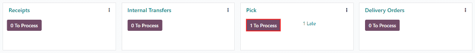

Process receipts and deliveries in two steps¶
Depending on a company’s business processes, multiple steps may be needed before receiving or shipping products. In the two-step receipt process, products are received in an input area, then transferred to stock. Two-step receipts work best when various storage locations are being used, such as locked or secured areas, freezers and refrigerators, or various shelves.
Products can be sorted according to where they are going to be stored, and employees can stock all the products going to a specific location. The products are not available for further processing until they are transferred into stock.
In the two-step delivery process, products that are part of a delivery order are picked from the warehouse according to their removal strategy, and brought to an output location before being shipped.
One situation where this would be useful is when using either a FIFO, LIFO, or FEFO removal strategy, where the products that are being picked need to be selected based on their receipt date or expiration date.
Odoo is configured by default to receive and deliver goods in one step, so the settings need to be changed in order to utilize two-step receipts and deliveries. Incoming and outgoing shipments do not need to be set to have the same steps. For example, products can be received in two steps, but shipped in one step. In the following example, two steps will be used for both receipts and deliveries.
Configure multi-step routes¶
First, make sure the Multi-Step Routes option is enabled in , under the Warehouse heading. After enabling the setting, Save the changes.
Note
Activating the Multi-Step Routes setting will also activate the Storage Locations feature.

Next, the warehouse needs to be configured for two-step receipts and deliveries. Go to , and click on the warehouse to change the warehouse settings.
Then, select Receive goods in input and then stock (2 steps) for Incoming Shipments, and Send goods in output and then deliver (2 steps) for Outgoing Shipments.

Tip
Activating two-step receipts and deliveries will create new input and output locations, which by default, are labeled WH/Input and WH/Output, respectively, on the Locations dashboard. To rename these locations, go to , and select the Location to change. On the location form, update the Location Name, and make any other changes (if necessary).
Process a receipt in two steps (input + stock)¶
Create a purchase order¶
On the main application dashboard, start by making a new quote by clicking New. Then, select (or create) a Vendor from the drop-down field, add a storable Product to the order lines, and click Confirm Order to finalize the quote as a new purchase order.
Important
For businesses with multiple warehouses that have different step configurations, the
Deliver To field on the PO form may need to be specified as
the correct input location connected to the two-step warehouse, which can be done by selecting
the warehouse from the drop-down selection that includes the Receipts label at the end of the
name.
After confirming the PO, a Receipt smart button will appear in the top of the PO form — click it to reveal the associated receipt.

Tip
Purchase order receipts can also be found in the application. In the Overview dashboard, click the # to Process smart button in the Receipts kanban card.

Process the receipt¶
The receipt and internal transfer will be created once the purchase order is confirmed. The status of the receipt will be Ready, since the receipt must be processed first. The status of the internal transfer will be Waiting Another Operation, since the transfer cannot happen until the receipt is completed. The status of the internal transfer will only change to Ready once the receipt has been marked as Done.
Click on the Receipt associated with the purchase order, then click Validate to complete the receipt and move the product to the Input Location.

Process the internal transfer¶
Once the product is in the Input Location, the internal transfer is ready to move the product into stock. Navigate to the app, and on the Inventory Overview dashboard, click the # To Process smart button in the Internal Transfers kanban card.

Click on the Transfer associated with the purchase order, then click Validate to complete the receipt and move the product to stock. Once the transfer is validated, the product enters the stock and is available for customer deliveries or manufacturing orders.
Process a delivery order in two steps (pick + ship)¶
Create a sales order¶
In the application, create a new quote by clicking New. Select (or create) a Customer, add a storable Product to the order lines, and then click Confirm.
After confirming the SO, a Delivery smart button will appear in the top, above the SO form. Click the Delivery smart button to reveal the associated receipt.

Tip
Sales order receipts can also be found in the application. In the Overview dashboard, click the # To Process smart button in the Pick kanban card.
Process the picking¶
The picking and delivery order will be created once the sales order is confirmed. When the Delivery smart button appears, click it to reveal the Transfers dashboard, which lists both the picking and the delivery orders.
The status of the picking will be Ready, since the product must be picked from stock before it can be shipped. The status of the delivery order will be Waiting Another Operation, since the delivery cannot happen until the picking is completed. The status of the delivery order will only change to Ready once the picking has been marked as Done.

Click on the picking delivery order to begin processing it. If the product is in stock, Odoo will automatically reserve the product. Click Validate to mark the picking as Done, then the delivery order will be ready for processing. Since the documents are linked, the products which have been previously picked are automatically reserved on the delivery order.

Process the delivery¶
The delivery order will be ready to be processed once the picking is completed, and can be found in the application, on the Inventory Overview dashboard. Click the # To Process smart button in the Delivery Orders kanban card to begin.
Tip
The delivery order associated with the SO can also be quickly accessed by clicking on the Delivery smart button again, and choosing the delivery order on the Transfers page (which should now be marked as Ready).

Click on the delivery order associated with the SO, then click on Validate to complete the move.

Once the delivery order is validated, the product leaves the WH/Output location on the Transfers dashboard and moves to the Partners/Customers location. Then, the status of the document will change to Done.